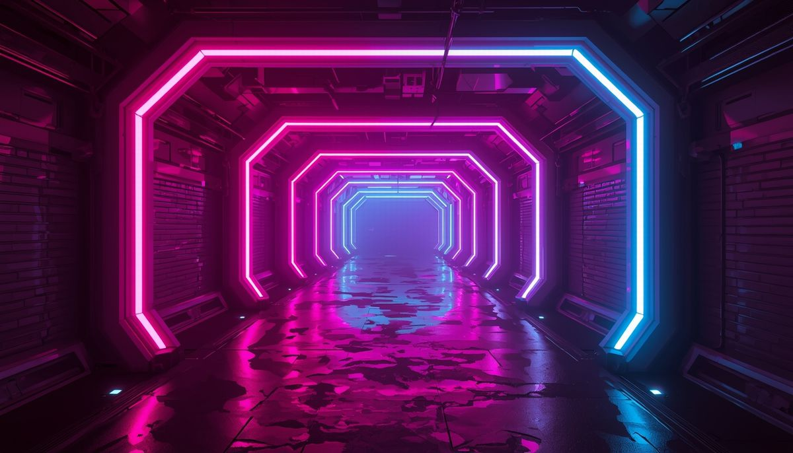
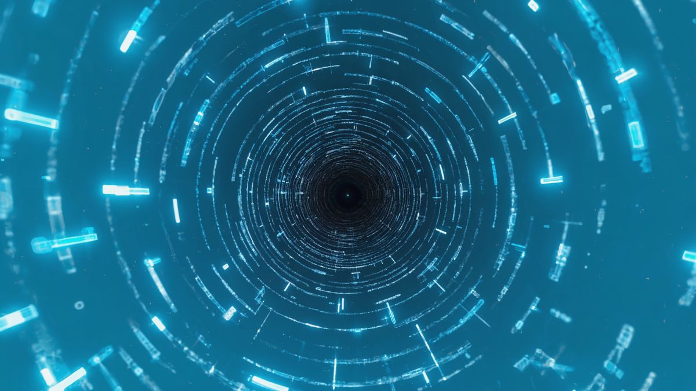
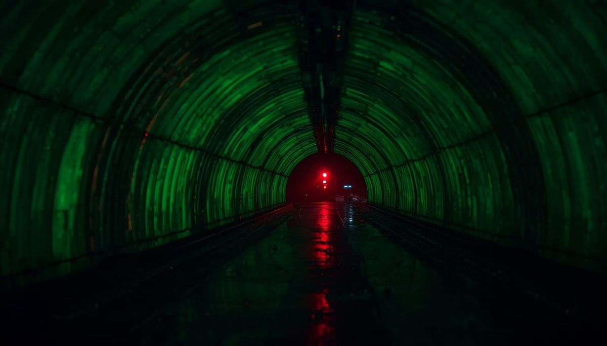

Cyberpunk
Neon cities, synthetic memories, and high-voltage signals from the original frequency.
DNR Archive / 07 Channels
Recovered frequencies, active protocols, and long-range transmissions from across the DARK NETWORK RADIO signal.

Neon cities, synthetic memories, and high-voltage signals from the original frequency.

Focused machine ambience for coding, deep work, and long sessions inside the network.

Slow nocturnal soundscapes for quiet hours, sleep, and late-night immersion.

Warm night air, distant lights, and cyberpunk ambience beneath an electric sky.

Heavy modern cyberpunk electronics, deep bass pressure, and cinematic transmissions.

Classic cyberpunk energy, analog shadows, and neon ruins recovered from lost futures.

Synthetic rainfall, wet streets, and deep cyberpunk ambience for late-night focus.